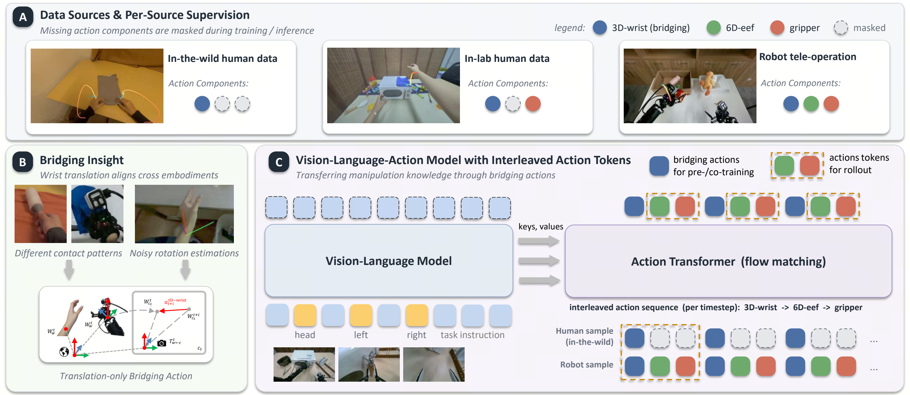
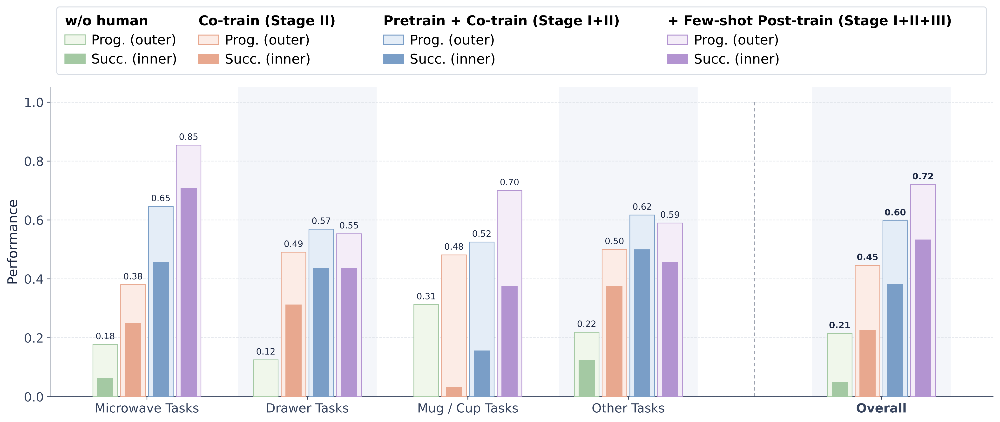
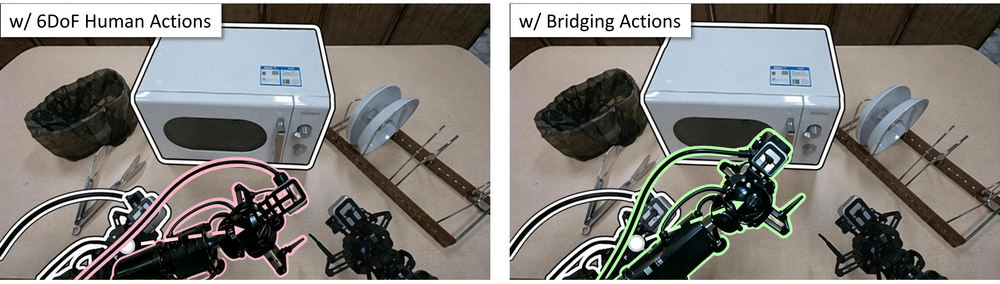

Human manipulation data is cheap, abundant, and diverse, making it one of the most promising resources for scaling up robot learning. Yet transferring skills from humans to robots remains hard: most prior work treats humans as just another bi-manual 6DoF embodiment, which suffers from two problems: hand-pose estimates are noisy, and the contact patterns of human fingers differ fundamentally from those of a parallel gripper, so that wrist rotation is semantically misaligned with gripper manipulation. We argue that learning rotation-inclusive action signals from human data is therefore sub-optimal, and instead propose a bridging action representation: the relative wrist translation within the initial head-camera frame, an action space shared by humans and robots. To handle the potential absence of certain action components in different embodiments, we build a π0-like vision-language-action model with interleaved action tokens and attention masking. On a suite of novel bi-manual manipulation tasks, our bridging action transfers human manipulation knowledge to robots far more effectively than noisy 6DoF human actions and scales with the amount of human data.
We train a vision-language-action policy on human action data and robot tele-operation data with different available action components. Instead of using 6DoF wrist actions for human data, we adopt only the wrist translation, defined over a chunk of k = 30 future steps.

Each data source supervises only the action components that can be reliably extracted.
| Data source | a3D-wrist | a6D-eef | agripper |
|---|---|---|---|
| In-the-wild human (EgoDex + out-sourced) | ✓ | – | – |
| In-lab human action data | ✓ | – | ✓ |
| Robot tele-operation | ✓ | ✓ | ✓ |
We conduct extensive real-world experiments on the ByteMini bi-manual robot to answer: is the bridging representation helpful and scalable for transferable robot skills?

Training only on pick-and-place data achieves much lower task progress and success rate, showing that generalized PnP data alone is insufficient for the evaluation tasks.
Pre-training on large-scale human actions with a3D-wrist yields substantial improvements, indicating the scalability and effectiveness of the bridging action.
The mainstream practice extracts relative 6DoF wrist actions, treating humans as another robotic embodiment. We compare this baseline with our bridging action, both trained from scratch. Our representation consistently outperforms the 6DoF baseline, which produces distorted, off-target wrist poses.
| Human Actions | Overall Prog. (%) | Overall Succ. (%) |
|---|---|---|
| a6D-eef | 34.67 | 12.50 |
| a3D-wrist (Ours) | 44.58 | 22.50 |

Across 15 manipulation tasks, the robot reproduces behaviors learned from human demonstrations under the same language instructions in 10-shot rollouts, using only 10 task-specific robot episodes per task.
Given the same vision and language input, we ask the model to produce both the bridging action a3D-wrist and the 6DoF end-effector action a6D-eef, then project both onto the head camera. The two align closely across diverse tasks, showing that the bridging action is a reliable proxy for executable robot actions.
We investigate the feasibility of learning task-specific bi-manual robot skills from human motion data. We propose a translation-based bridging action representation compatible with both robot and human action data, and introduce an interleaved action sequence to address potentially missing action components. Experiments show that human action co-training and human-only pre-training improve real-robot performance across the 15 evaluation tasks.